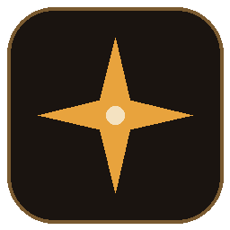
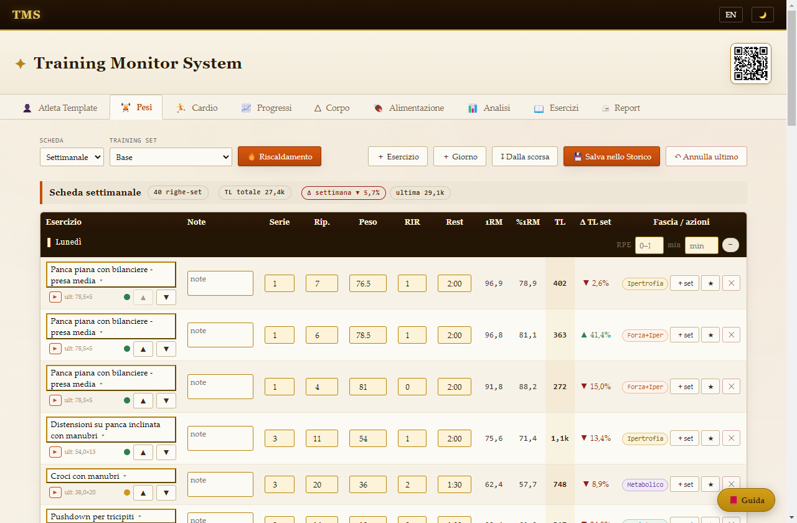
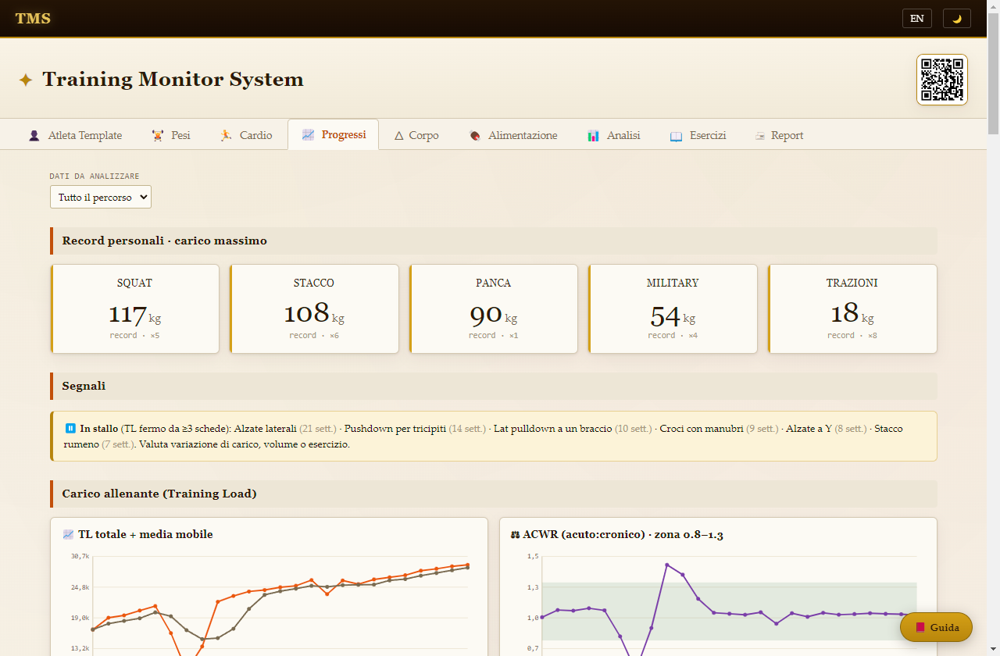
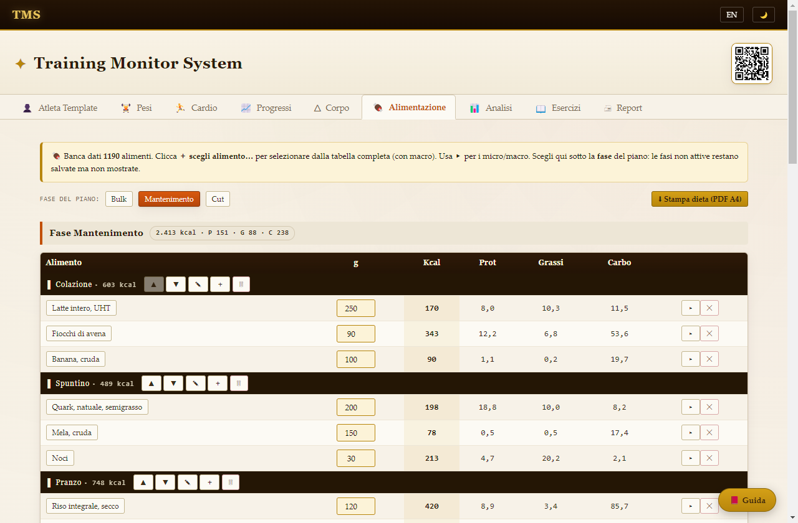
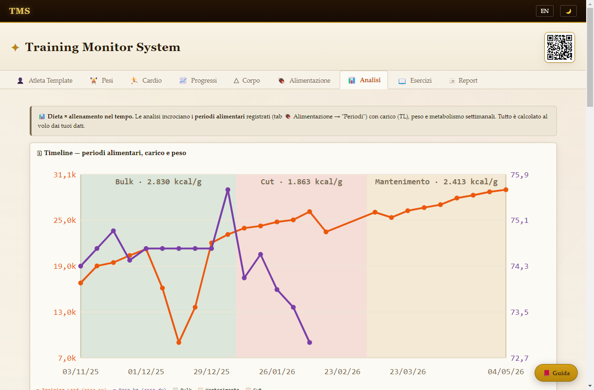

Allenamento e nutrizione in un'unica app desktop: scheda, storico, progressi, dieta e report — per atleti e coach. Tutto in locale, zero cloud.
Il profilo dimostrativo «Atleta Template» è incluso nell'installer: l'app nasce già piena, per esplorare ogni funzione.




Strumenti da preparatore, interfaccia da manuale tecnico.
Più atleti/clienti, ognuno con scheda, storico, misure e dieta propri. La scheda viaggia come file: il cliente la compila nel browser e ti rimanda il rientro, che entra nello Storico con un click.
Catalogo per gruppo muscolare e sottocategoria, video dimostrativi inclusi e sostituibili coi tuoi. Derivato da free-exercise-db, tradotto e adattato.
1RM stimato (Epley, Brzycki, Lombardi), Training Load, ACWR, monotonia e strain: ricalcolati al volo dai dati grezzi, sulle formule della letteratura peer-reviewed.
Banca dati svizzera dei valori nutritivi (USAV) e riferimenti OMS/FAO: piani per fase con kcal, macro, micro e indice settimanale.
PDF A4 stampabile da consegnare e Report digitale per smartphone con video incorporati: il lavoro del coach, presentato bene.
Niente account, niente cloud, niente telemetria: tutto in file JSON leggibili sul tuo PC, con backup automatici settimanali e backup manuale in un click.
Guide video passo-passo sul canale YouTube del progetto.
🎓 Iscriviti per i tutorial su installazione, prima scheda, scambio col cliente e report.
▶ YouTube · @TrainingMonitorSystem